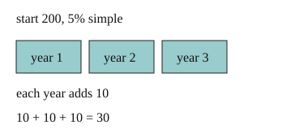

Part of Compound Interest. Answer in the chat (1: ..., g: c), add sure or guess after any answer, and say done when finished.
Last time: 200 at 5% simple interest. How much interest in 3 years? You said c) 10. It is b) 30.

A bank pays you for keeping money there, and you want to know how much. With simple interest, every year pays the same amount: the rate times the principal, the amount you start with (notes 1). Over n years:
interest = P × r × n
Q1. 800 at 3% simple interest for 4 years. How much interest?
96
Right: 0.03 × 800 = 24 a year, and 4 years make 96 (notes 1).
Q2. 1500 at 4% simple interest for 2 years. How much is in the account at the end?
1500 x 0.04 = 6, two years is 12, so 1512
You wrote "1500 x 0.04 = 6". Look at that step: what is 1% of 1500? (notes 1)
1500 x 0.04 = 60, two years is 120, so 1620
Right: 60 a year, 120 in all, so 1620 (notes 1).
Q3. Mia says 10% simple interest doubles your money in 5 years. What is wrong?
each year only adds 10% of the start, so 5 years adds 50%. It takes 10 years to double
Right: the same 10% of the start each year (notes 1).
You can now work out simple interest over any number of years.
400 earns 10% a year, and each year's interest is added before the next year's is worked out. How much is there after 2 years?
a (guess)